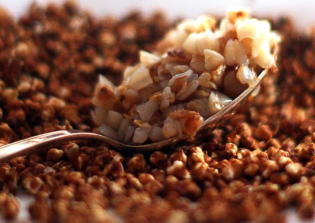

Back to Recipe List
Buck Up Buckwheat

Image by Ирина Ирина from Pixabay
Description
A staple in Eastern Europe. Breakfast that will last until dinner.
As my grandfather said: “Eat breakfast by yourself, share lunch with a comrade, leave dinner to the enemy.”
Ingredients
- buckwheat — 1 cup (pick a smaller measure for 1 person...or don’t)
- water — 2 cups (double volume of buckwheat)
- butter — 3 tablespoons or more
- salt — and pepper, to taste

Photo by Sonia on Unsplash
Optional toppings: add in the last 5min just to warm them up: leftovers, corn, peas, spinach, sharp hard cheese (pecorino); herbs can be added from the start.
Authentic optional toppings: canned smoked sprats, tails to be arranged along the edge of your plate as you eat, like notches on a bedpost. Caution: smells. Worth it.
Steps
- Put 1 measure of buckwheat and 2 measures of water in a pot. Salt. Turn heat to max.
- Putter around until water reaches rolling boil. Make tea? Do last night’s dishes?
- When the water is boiling, turn down to low/medium heat (3/10). (2/10) if you might fall asleep, then it definitely won’t burn even if you return an hour later. If you have an aggressive stove, add a splash of water to bring it down to a simmer right away.
- You may leave the kitchen for 15 minutes! (or 20. or 30.) Shower. Chill. Accept today is happening. Then check if there is water left in the pot. If it is gone and grains stick to bottom, add a splash of water and wait a few minutes.
- Water gone? Add butter. Squish it down to the bottom of the pot, leave it for a minute, then stir with spoon. You can always add More Butter. And salt.
- Eat directly from pot if family isn't watching. Wake up.
Back to Top